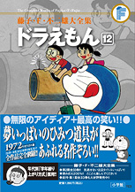

| |

定価：本体1,800円＋税
A5判／734ページ
好評発売中！
★は初めて単行本に収録される
作品です。
※収録内容は変更になる
場合があります。

|
ふわりねんど（小学一年生1979年4月号）
げんきえさ（小学一年生1979年5月号）
たんぽぽくし（小学一年生1979年6月号）
空気てぶくろ（小学一年生1979年7月号）
ラジコンのもと（小学一年生1979年8月号）
台風遊び（小学一年生1979年9月号）
動物セット（小学一年生1979年10月号）
ココロコロン（小学一年生1979年11月号）
さか道レバー（小学一年生1979年12月号）
おりたたみハウス（小学一年生1980年1月号）
道すじカード（小学一年生1980年2月号）
ママをたずねて三千キロじょう
（小学一年生1980年3月号）
きんとフード（小学二年生1980年4月号）
おそるべき正義ロープ（小学二年生1980年5月号）
ぼくのまもり紙（小学二年生1980年6月号）
分身ハンマー（小学二年生1980年7月号）
パトローラー（小学二年生1980年8月号）
カチカチカメラ（小学二年生1980年9月号）
かんしゃく紙（小学二年生1980年10月号）
かんせいウェーブ（小学二年生1980年11月号）
のび太のヘリコプター（小学二年生1980年12月号）
あやつりそっくりふうせん
（小学二年生1981年1月号）
雪だるまのぬいぐるみを作ろう！
（小学二年生1981年2月号）
グルメテーブルかけ（小学二年生1981年3月号）
ションボリ、ドラえもん（小学三年生1981年4月号）
のび太のなが〜い家出（小学三年生1981年4月号）
ポスターになったのび太（小学三年生1981年5月号）
のび太のスペースシャトル
（小学三年生1981年6月号）
コンチュウ飛行機にのろう
（小学三年生1981年8月号）
アワビとり潜水艦出航（小学三年生1981年9月号）
ハツメイカーで大発明（小学三年生1981年10月号）
水は見ていた（小学三年生1981年11月号）
空気中継衛星（小学三年生1981年12月号）
○□恐怖症（小学三年生1982年1月号）
タイムコピー（小学三年生1982年2月号）
四次元たてましブロック（小学三年生1982年3月号）
|
ひさしぶりトランク（小学四年生1982年4月号）
いれかえ表札（小学四年生1982年5月号）
ニンニン修業セット（小学四年生1982年6月号）
百丈島の原寸大プラモ（小学四年生1982年7月号）
「ワ」の字で空をいく（小学四年生1982年8月号）
横取りジャイアンをこらしめよう
（小学四年生1982年9月号）
ペンシル・ミサイルと自動しかえしレーダー
（小学四年生1982年10月号）
天つき地蔵（小学四年生1982年11月号）
のび太も天才になれる？（小学四年生1982年12月号）
フエール銀行（小学四年生1983年1月号）
ざぶとんにもたましいがある
（小学四年生1983年2月号）
しりとり変身カプセル（小学四年生1983年3月号）
十戒石板（小学五年生1983年4月号）
たましいふきこみ銃（小学五年生1983年5月号）
メモリーディスク（小学五年生1983年6月号）
時差時計（小学五年生1983年7月号）
動物変身恩返しグスリ（小学五年生1983年8月号）
あとからアルバム（小学五年生1983年9月号）
タネなしマジック（小学五年生1983年10月号）
ホンワカキャップ（小学五年生1983年11月号）
ヤジウマアンテナ（小学五年生1983年12月号）
「スパルタ式にが手こくふく錠」と
「にが手タッチバトン」（小学五年生1984年1月号）
雨男はつらいよ（小学五年生1984年2月号）
ルームガードセット（小学五年生1984年3月号）
空ぶりは巻きもどして…（小学六年生1984年4月号）
合成鉱山の素（小学六年生1984年5月号）
ドッキリビデオ（小学六年生1984年6月号）
ハリーのしっぽ（小学六年生1984年7月号）
友だちの輪（小学六年生1984年8月号）
ジャイアン台風接近中（小学六年生1984年9月号）
もりあがれ！ドラマチックガス
（小学六年生1984年10月号）
なんでもひきうけ会社（小学六年生1984年11月号）
★次元ローラー（小学六年生1984年12月号）
| ぐ |
|
たらお正月セット（小学六年生1985年1月号） |
ジャイアン殺人事件（小学六年生1985年2月号）
右か左か人生コース（小学六年生1985年3月号）
|